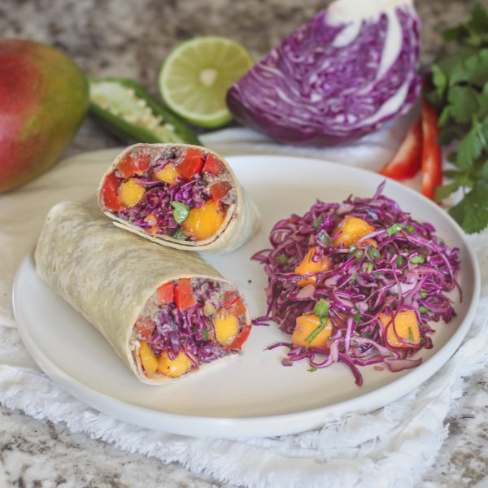

Creamy Black Bean Wraps with Sautéed Bell Peppers & Mango-Cabbage Slaw

Prep Time
35 min
Nutrition (per serving)
651.5 kcalCalories
24.5 gProtein
99.9 gCarbs
20.4 gFat
Full nutrition table
| Calories | 651.5 kcal |
| Total fat | 20.4 g |
| Saturated fat | 3.5 g |
| Trans fat | 0.8 g |
| Cholesterol | 0 mg |
| Sodium | 979.4 mg |
| Carbohydrates | 99.9 g |
| Fiber | 23.2 g |
| Sugars | 24.2 g |
| Protein | 24.5 g |
| Potassium | 1492.3 mg |
| Calcium | 269.9 mg |
| Iron | 9.2 mg |
| Vitamin A | 18.3 IU |
| Vitamin C | 206.1 mg |
| Vitamin D | 0 IU |
Cookware
Ingredients
- 2 (15 oz) cansblack beans
- 1 small bunchcilantro
- 2 clovesgarlic
- 1jalapeño pepper
- 4large flour tortillas
- 2limes
- 1mango
- ½ cuppumpkin seeds
- 2red bell peppers
- 1 small headred cabbage
- 1shallot
- chili powder
- coriander, ground
- cumin, ground
- extra virgin olive oil
- salt
Steps
- Wash and dry the fresh produce.1 small bunch cilantro
2 limes
1 jalapeño pepper
1 mango
1 small head red cabbage
2 red bell peppers - Shave cilantro leaves off the stems; discard stems and mince the leaves. Place half in a large bowl and half in a blender.
- Juice one lime into the bowl with the cilantro; juice remaining lime into the blender and set aside.
- Quarter jalapeño pepper lengthwise; seed and remove ribs with a spoon. Mince and add to the bowl with the cilantro. (Be careful with jalapeños; do not touch your eyes and ensure you wash your hands after handling or wear gloves while preparing.)
- Peel and mince shallot; add to the bowl along with oil, salt, and cumin; whisk to combine the dressing.1 shallot
4 tsp extra virgin olive oil
½ tsp salt
½ tsp cumin, ground - Peel mango and slice flesh away from the pit, starting with the flat sides; medium dice and add to the bowl with the dressing.
- Quarter the cabbage lengthwise, then cut out and discard the core; slice crosswise into thin (shred-like) strips and add to the bowl. Stir to combine the slaw and set aside.
- Preheat a large skillet over medium-high heat.
- While the skillet heats up, trim, seed, and thinly slice bell peppers.
- Once the skillet is hot, add oil and swirl to coat the bottom; add bell pepper and salt. Cook, stirring occasionally, until softened, 4-5 minutes. Remove from heat.2 tsp extra virgin olive oil
½ tsp salt - Meanwhile, drain and rinse beans; add to the blender with the cilantro and lime juice.2 (15 oz) cans black beans
- Peel garlic; add to the blender along with water, pumpkin seeds, and spices. Blend on high until smooth.2 cloves garlic
1 cup water
½ cup pumpkin seeds
2 tsp chili powder
1 tsp cumin, ground
1 tsp coriander, ground
½ tsp salt - Place tortillas on a flat surface and spread each with an even layer of black bean spread. Top with bell peppers and a small portion of slaw (reserving the rest for serving); roll tightly to close.4 large flour tortillas
- Cut wraps in half and divide between plates; serve with remaining slaw on the side and enjoy!